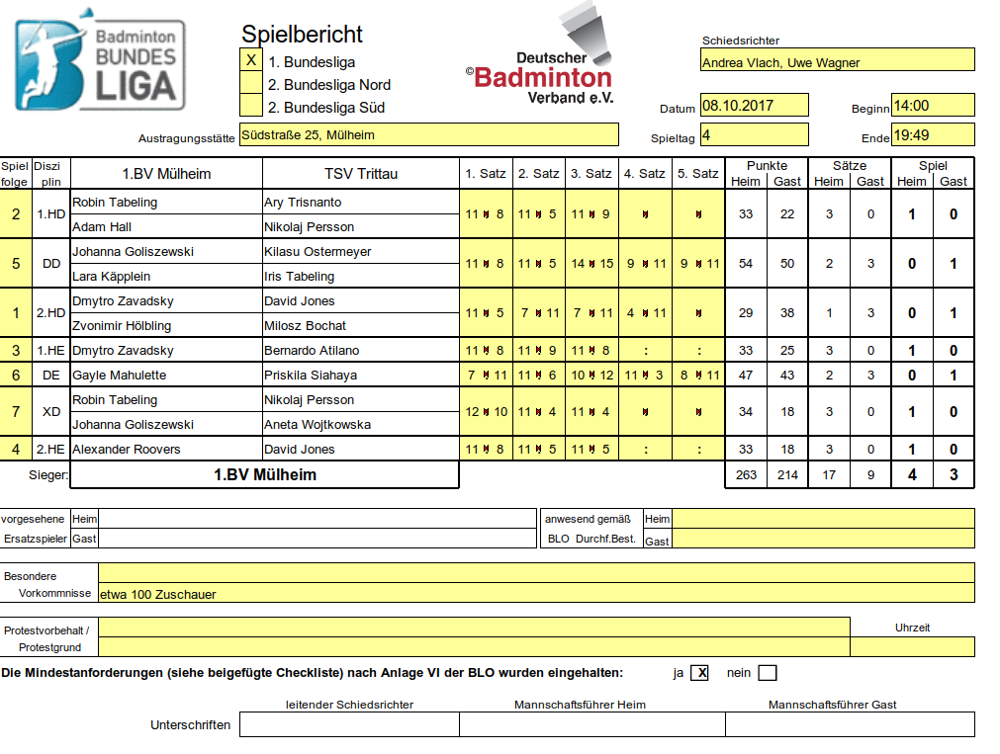

bup ist kostenlos und kann mit dem Erwerb des Tickers sofort genutzt werden.
Fast alle halbwegs modernen Geräte (auch 50€-Tablets) genügen. Im Zweifel einfach mal mit der Demo-Webseite ausprobieren.
Die meisten Schiedsrichter bevorzugen große Tablets; 9"-12" sind optimal.
Optional: Tablet-Stifte (für besonders schwitzige Schiedsrichterhände)
Optional, aber empfehlenswert
Zahlreiche Anbieter, ggf. suchen nach Tablet-Halterung oder Tablet-Ständer.
Sehr gut und kompakt, aber teuer: ChargerCity 4-Wege-Ständer
Empfehlenswert: Mindestens 1 Fernseher pro Feld, etwa 50"
Alternativ: 1 Beamer
| Ansteuerung | ~€ | Bedienung |
|---|---|---|
| Smart-TV | 0 | - Fernbedienung |
| Raspberry Pi | 60 | = ssh, VNC |
| Mini-PC | 150 | = VNC |
| Laptop | 150+ | + Direkt, VNC |
Mindestens 1 Laptop für Aufstellungseingabe, Drucken etc.
mit Chrome, Edge, Firefox oder Safari
Drucker (empfehlenswert: Laserdrucker)
Kabeltrommeln und Mehrfachsteckdosen
Rückstandsfreies Abklebband
ggf. WLAN-Router mit Mobilfunkanbindung
Empfehlenswert: Backup-/Demo-Tablet
Empfehlenswert: 2. Laptop für Referee Mode o.ä.
Bei allen Geräten sollte automatische Abschaltung deaktiviert oder auf lange Intervalle gesetzt werden.
Tipp: Lesezeichen hinzufügen!
Demo-Seite zum Testen und Ausprobieren ohne Ticker (voll funktionsfähig, aber keine Übertragung):
Weitere Demos:
Regionalliga Mitte,
Nord,
West,
SüdOst,
NLA (Schweiz),
Österreichische BundesLiga,
Länderspiel
Auf allen Fernsehern und Beamern bup öffnen.
Dann Anzeigetafel ganz unten in den Einstellungen, oder direkt &display in der URL.
Auf Reihenfolge klicken.
Reihenfolge automatisch (empfohlen) oder manuell optimieren.
Rot = Direkt hintereinander,
Gelb = 1 Spiel Pause
Braun = 2 Spiele Pause
3x (für Schiedsrichter, Heim und Gast) ausdrucken.
Auf Schiedsrichterzettel klicken und drucken.
Die Schiedsrichter falten den Zettel - nur der Kopf des Zettels wird für die Wahl benötigt, alles danach geschieht auf dem Tablet.
Bei gelben Karten o.ä. Schiedsrichterzettel ausdrucken: Dafür einfach auf das Spiel klicken, dann Einstellungen (oben rechts), dann Schiedsrichterzettel.
Nachdem der Wettkampf vorbei ist auf Spielbericht klicken, ggf. weitere Daten eingeben und dann generieren.
Diesen Zettel dreimal ausdrucken und unterschreiben lassen.
Mit dem optionalem Referee Mode kann man:
Start hier, dann den Anweisungen folgen.
Im Moment ist eine Internetverbindung erforderlich.
Nicht alle Features sind mit allen Tickern verfügbar:
| Feature | badmintonticker | CourtSpot | sclive |
|---|---|---|---|
| Aufstellung | ohne Ranglisten | ✔ | ✘ |
| Reihenfolge speichern | ✘ | ✔ | ✘ |
| Spielverlauf | ✘(✔ mit Referee Mode) | ✔ | ✔ |
| Metadaten im Spielbericht | ✔ | ✔ | ✘ |
| turnier.de-Übertragung | ✔ | ✔ | ✘ |
Bei Fragen, Unklarheiten oder Fehlern helfe ich immer gerne.
Genauso freue ich mich immer über Anregungen und Ideen zur Verbesserung von bup!